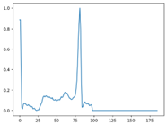
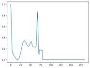
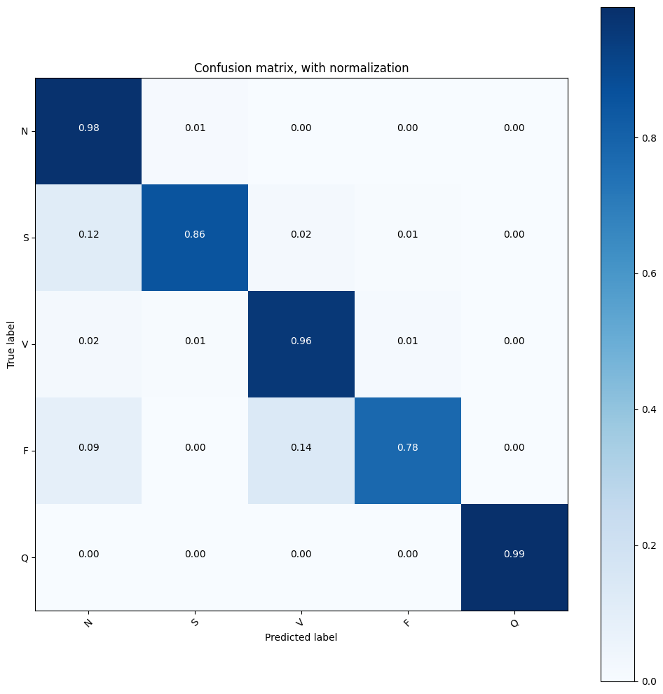
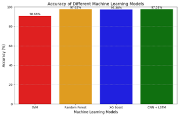
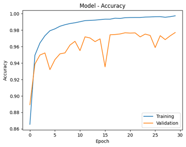

CARDIOVASCULAR diseases (CVDs) such as myocardial infarction, cardiomyopathy and myocarditis are the leading causes of death in the world.According to the American Heart Association (AHA), 90% of patients cannot recognize themselves as being at high risk before a cardiac attack.Electrocardiogram (ECG) signal represents electrical activities of the heart and is widely used in detection and classification of cardiac arrhythmias.Early detection and continuous monitoring can significantly improve treatment outcomes and the solution is literally on your hands- HMSs(Health monitoring systems) IoT, BigData Processing are the key for accurate arrhythmia detection.
Develop a machine learning model to automate the interpretation of ECG signals. Trained on diverse ECG data, the model captures intricate patterns indicative of cardiac abnormalities, providing healthcare professionals with a reliable tool to expedite accurate diagnoses and interventions.
To develop a robust machine learning model for accurately classifying ECG signals, focusing on distinguishing between normal and abnormal cases. The model aims to provide detailed classification, identifying specific cardiac abnormalities such as Normal beat (N), Atrial Premature beat (S), Premature Ventricular contraction (V), Fusion beat (F), and Paced Beat (Q).
The dataset, sourced from the MIT-BIH Arrhythmia Database, comprises 109,446 samples across 5 categories with a sampling frequency of 125Hz.
Classes: N: Normal beat(0), S: Atrial Premature beat(1), V: Premature Ventricular contraction(2), F:
Fusion of ventricular and normal beat(3), Q: Paced Beat(4)
Source of the dataset: https://www.physionet.org/content/mitdb/1.0.0/
Initial Dataset was imbalance with different classes as shown the n: class was about 82.8%, while
class f: was about 0.7%, this imbalance would lead to a bias model.
Upsampling addresses class imbalance by increasing the number of instances in minority classes. This
involves randomly resampling instances from each minority class to match the size of the majority
class, ensuring a balanced dataset for improved model performance.
The dataset exhibits temporal behavior, evident from observed graphs, indicating underlying temporal patterns. Traditional machine learning models may struggle to capture these nuances effectively. However, Neural Networks, such as Convolutional Neural Networks (CNNs) and Recurrent Neural Networks (RNNs) with Long Short-Term Memory (LSTM) architecture, are well-suited to handle temporal data. Their ability to learn from sequential information makes them ideal for capturing and leveraging the temporal patterns present in the dataset, potentially leading to more accurate results.
To classify the data into five distinct classes, various classification algorithms can be employed.
Convolutional Layers: Consist of 3 layers with ReLU activation, followed by Batch Normalization and MaxPooling1D operations. LSTM Layers: Comprises of 1 LSTM layer, The output of the CNN layers, represented by pool3, is then fed into the LSTM layer
Data
 Confusion Matrix
Model Evaluation
CNN+LSTM Model performance
